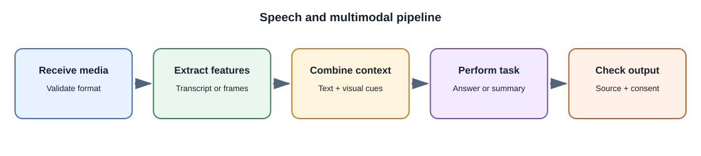
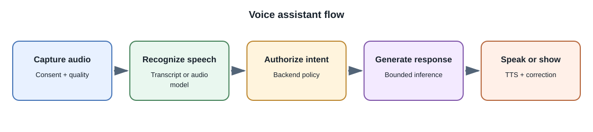

Speech and Multimodal AI¶
Introduction¶
Multimodal AI works with more than one type of input or output, such as text, images, audio, and video. A system may use one model that accepts several modalities or compose specialized models into a pipeline. The supported media, languages, duration, resolution, and interaction patterns are specific to each model.


Speech tasks¶
| Task | Input | Output | Typical use |
|---|---|---|---|
| Automatic speech recognition (ASR) | Audio waveform or encoded audio | Text transcript | Captions, voice notes, searchable meetings |
| Speech translation | Audio or transcript in one language | Text or audio in another language | Accessible multilingual communication |
| Text-to-speech (TTS) | Text plus voice settings | Generated audio | Narration, accessibility, voice interfaces |
| Speaker diarization | Audio | Speaker labels and time segments | Meeting summaries and speaker-aware transcripts |
| Speech understanding | Audio, sometimes with text context | Answer, labels, or action candidates | Voice assistants and audio analysis |
Transcription can confuse similar words, names, accents, background sounds, and overlapping speakers. Preserve timestamps or confidence information when the workflow needs traceability, and let users correct transcripts.
Images and video¶
Vision models can classify or describe images, extract text with OCR, answer questions about a chart, or compare visual content. Video adds time: systems may sample frames, process audio separately, or use a model that accepts video directly. Frame sampling can miss brief events, and large media can exceed request limits.
For production uploads, validate media server-side, limit size and duration, remove or protect sensitive metadata where appropriate, and use background jobs for long-running extraction. Keep the original media and derived transcripts, captions, and embeddings under the same authorization and retention policy.
Building a multimodal workflow¶
- Identify the user's task and which modalities are truly necessary.
- Obtain consent and validate file format, size, duration, and policy.
- Preprocess safely; record transformations such as resizing or audio resampling.
- Call a model with a bounded request and clear output contract.
- Validate the response and link it to source media, timestamps, or regions when possible.
- Present uncertainty and allow correction, deletion, or human review.
Evaluation¶
Text-only benchmarks are insufficient for many media tasks. Evaluate transcription word errors and names, timestamp alignment, image-text grounding, speaker attribution, accessibility, and performance across conditions relevant to the product. Review privacy and consent requirements for voice and face data.
Common misconceptions¶
- A multimodal model does not necessarily support every modality in both directions.
- A video summary can miss events between sampled frames.
- A transcript may be fluent but still misrecognize a name or number.
- Voice cloning and face synthesis require stronger consent and abuse controls than ordinary text generation.